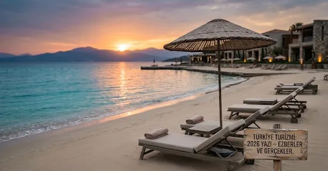

2026 Yazında Türkiye Turizmi: Ezberler, Bahaneler ve Değişen Fiyat Algısı
2026 yaz sezonunun eşiğindeyken, Türk turizminde yıllardır süregelen bazı kronik söylemlerin ve alışkanlıkların yeniden sahneye çıktığını gözlemliyoruz. Sektör temsilcilerinin bir kısmı sezona dair beklentileri ve aksaklıkları yorumlarken yine tanıdık argümanların arkasına sığınıyor. Peki, gerçekte ne oluyor?
1. Bölgesel Savaşlar ve "Hazır Bahaneler"
Coğrafyamızın zorlu dinamikleri ve yakın coğrafyadaki gerilimler (en son şubat ayında tırmanan bölgesel çatışmalar gibi) turizm sektöründe her sıkışmada ilk başvurulan "kalkan" haline geldi. Evet, jeopolitik riskler bir gerçektir; ancak bu durumun arkasına sığınarak strateji geliştirmeyi ertelemek, yapısal sorunlarımızı halı altına süpürmekten başka bir işe yaramıyor. Kriz yönetimi sadece krizi bahane etmek değil, krize rağmen sürdürülebilir kalabilmektir.
2. "İspanya ve Yunanistan Dolmadan..." Ezberi
Sektörde yıllardır tekrarlanan klişe bir ifade vardır: "Önce İspanya, Yunanistan ve Mısır dolacak, onlardan taşan turist Türkiye’ye gelecek." Bu bakış açısı, Türkiye gibi devasa bir turizm gücünü, Akdeniz çanağında "alternatif veya ikincil bir destinasyon" konumuna indirgemektir. Türkiye; tesis kalitesi, hizmet standardı ve doğasıyla kendi talebini kendi yaratması gereken bir aktörken, neden hala rakiplerinin doluluk oranlarına göbekten bağlı bir stratejiyle anılıyor? Bu ezberi artık bozmak zorundayız.
3. "Ucuz Destinasyon" Kimliğinin Kaybı ve Fiyat-Performans Paradoksu
Kabul edelim; Türkiye, son dönemde yaşanan yüksek enflasyon ve artan maliyet sarmalıyla birlikte "ucuz cennet" olmaktan kısmen çıktı. Ancak asıl tehlike fiyatların artması değil, fiyat-performans dengesinin bozulmasıdır.
Yabancı turist, geçmişte Türkiye'yi tercih ederken ödediği paranın karşılığında muazzam bir hizmet alıyordu. Bugün ise artan döviz bazlı fiyatlar nedeniyle, yabancı tüketici haklı olarak şu soruyu soruyor: "Aynı bütçeyle İspanya, İtalya veya Yunan adalarına gidebilecekken neden Türkiye?" Rekabet avantajımızı fiyat üzerinden kaybettiğimiz an, yerini dolduracak güçlü bir marka algısı sunamazsak sadık turist kitlemizi de rakiplere kaptırırız.
4. Sayılar mı, Katma Değer mi?
Resmi verilere baktığımızda sınır kapılarından giren ziyaretçi sayılarında artışlar görebiliriz. Ancak turizmde başarı, sadece sınırdan geçen kişi sayısı ile ölçülemez. Asıl başarı; o turistin ülkede ne kadar geceleme yaptığı, şehir esnafına ne kadar dokunduğu ve kişi başı bıraktığı döviz miktarı (katma değer) ile ölçülür. Bugün sektörün fısıltı gazetesinde dolaşan doluluk endişeleri, sayısal hedeflerin sahadaki ciro ve kârlılık gerçekleriyle uyuşmadığını net bir şekilde gösteriyor.
Özetle;
2026 yazında Türkiye turizmi bir yol ayrımında. Eski söylemleri tekrarlayarak, fiyat artışlarını sadece enflasyona bağlayarak veya coğrafi krizleri bahane ederek bu sezonu "kurtarmaya" çalışmak geçici bir çözümdür. Türkiye’nin ihtiyacı olan şey; ucuz tatil ülkesi imajından sıyrılırken, nitelikli ve ödediği paraya değen bir "deneyim destinasyonu" markası inşa etmektir.
Sizce bu yaz sezonunda sahadaki en büyük riskimiz maliyetler mi, yoksa vizyon eksikliği mi? Değerli sektör paydaşlarının yorumlarını merak ediyorum.
#Turizm #TürkiyeTurizmi #Turizm2026 #Strateji #Otelcilik #Akdeniz #Ekonomi